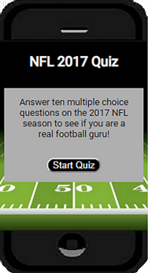

Projects
Hobby with Friends
Hobby with Friends is designed to connect you with others that enjoy similar interests. Have you ever organized an event by sending a mass text message that unavoidably leads to everyone's phone being spammed, or simply showed up to your college gym looking for a pick-up game of basketball to find it empty? This app excels at keeping you connected and organized. Start by creating an account, then head over to your profile page to add your interests. Your home page will show you the events you created along with events that match your interests. Search for events around you, find the one you like click the title to view the full details of the event, then hit the join button to let the event owner you will be attending. Creating an event has never been easier, simply fill out the form and tell your friends about the website. As the owner of the event, you will have the ability to remove users from the event.

Technologies: HTML, CSS, JS, React, Node.js, Express, PostgreSQL
Live App/ Github Client/ Github API
2017 NFL Quiz
Attempt to answer ten questions on the NFL 2017 season.
Technologies: HTML, CSS, JS, jQuery
Visit quiz app / Visit quiz github Repo
Videos with Sentimental Comments and Tweets
At the home page, the user searches for a YouTube video precisely as he would on Youtube. The results page is also similar, the user's search will return a list of related videos. After the user finds and clicks the, he wants the app returns the YouTube video, a summary of the video's comments sentiment, and tweets related to the user's search. The app uses a sentiment library (AFINN-based sentiment analysis for Node.js) to go through each word in the comments and assigns it a value. If the comment has an overall positive value, it counts as a positive comment. If it has a negative value, it counts as a negative comment. The app sums up the results and returns the user a percentage of positive comments, neutral comments, and negative comments. The tweets presented at the bottom of the page also use the sentiment library. The user's original search is used on Twitter's API. The results are put into the sentiment library to return the most positive tweets, most negative tweets, and tweets by tweeters with the most followers (famous tweets).

Technologies: HTML, CSS, JS, jQuery, node JS